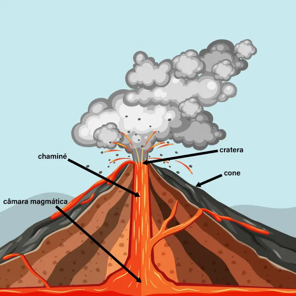
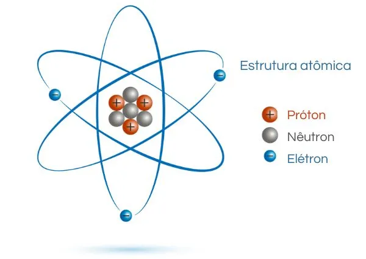
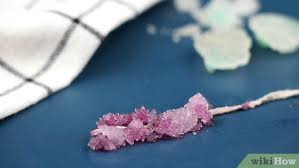

Experimentos Científicos
Descubra a ciência através de mãos à obra!

Vulcão Caseiro
Como fazer: 3 colheres de bicarbonato + corante + 1/2 xícara de vinagre!

Dança dos Elétrons
Como fazer: Balão esfregado no cabelo + papel picado ou bolinhas de isopor leve!

Cristais Mágicos
Como fazer: Sal + água quente + barbante + corante alimentício. Deixe 24h!